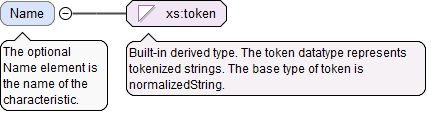

The optional Name element is the name of the characteristic.
Diagram

Type
xs:token
Properties
content
simple
minOccurs
0
Source
<xs:element name="Name" type="xs:token" minOccurs="0"><xs:annotation><xs:documentation>The optional Name element is the name of the characteristic.</xs:documentation></xs:annotation></xs:element>
The optional CharacteristicDesignator element is the designator of a characteristic together with an optional level of criticality and optional UUID. The designator element of the CharacteristicDesignator will typically be at the most general level when used in this CharacteristicDefinitionBaseType. For example, an instance of CharacteristicDefinitionBaseType might have a CharacteristicDesignator element with the Designator K. Then there might be three instances of CharacteristicItemBaseType referencing the CharacteristicDefinitionBaseType instance and having CharacteristicDesignator elements using Designators K-1, K-2, and K-3.
<xs:element name="CharacteristicDesignator" type="CharacteristicDesignatorType" minOccurs="0"><xs:annotation><xs:documentation>The optional CharacteristicDesignator element is the designator of a characteristic together with an optional level of criticality and optional UUID. The designator element of the CharacteristicDesignator will typically be at the most general level when used in this CharacteristicDefinitionBaseType. For example, an instance of CharacteristicDefinitionBaseType might have a CharacteristicDesignator element with the Designator K. Then there might be three instances of CharacteristicItemBaseType referencing the CharacteristicDefinitionBaseType instance and having CharacteristicDesignator elements using Designators K-1, K-2, and K-3.</xs:documentation></xs:annotation></xs:element>
The required n attribute is the number of Id elements in this array.
Source
<xs:element name="FeatureItemIds" type="ArrayReferenceType" minOccurs="0"><xs:annotation><xs:documentation>The optional FeatureItemIds element is a list of the QIF ids of the instances of FeatureItemType to which the CharacteristicItem applies.</xs:documentation></xs:annotation></xs:element>
The optional SubstituteFeatureAlgorithm element is the substitute feature data fitting algorithm for the feature or features. This setting overrides any substitute feature algorithm defined on the feature nominal or feature item for the purpose of evaluating this characteristic. This setting overrides the optional substitute feature algorithm on the characteristic nominal.
<xs:element name="SubstituteFeatureAlgorithm" type="SubstituteFeatureAlgorithmType" minOccurs="0"><xs:annotation><xs:documentation>The optional SubstituteFeatureAlgorithm element is the substitute feature data fitting algorithm for the feature or features. This setting overrides any substitute feature algorithm defined on the feature nominal or feature item for the purpose of evaluating this characteristic. This setting overrides the optional substitute feature algorithm on the characteristic nominal.</xs:documentation></xs:annotation></xs:element>
The required n attribute is the number of Id elements in this array.
Source
<xs:element name="NotableEventIds" type="ArrayReferenceType" minOccurs="0"><xs:annotation><xs:documentation>The optional NotableEventIds element is a list of QIF ids of notable events associated with the measurement of the characteristic.</xs:documentation></xs:annotation></xs:element>
The required n attribute is the number of Id elements in this array.
Source
<xs:element name="MeasurementDeviceIds" type="ArrayReferenceType" minOccurs="0"><xs:annotation><xs:documentation>The optional MeasurementDeviceIds element is a list of references to the measurement devices that may be used in the inspection of the characteristic.</xs:documentation></xs:annotation></xs:element>
The optional asmPathId attribute is a reference used for locating the id of an assembly path. If the asmPathXId attribute is not used, the asmPathId is a reference to an assembly path in the AsmPaths of the local document. If the asmPathXId is used, the asmPathId is the local id of an external QIF document, and the asmPathXId is a reference to an assembly path in the external QIF document. The assembly path (instantiation chain) unambiguously identifies a model entity within an assembly.
The optional asmPathXId attribute, if used, is a reference to the id of an assembly path in the external document identified by the asmPathId. The asmPathXId must not be used if the asmPathId is not used.
The optional xId attribute is a reference to the id of a QIF object in an external document. A QIF object in an external QIF document can be referenced by using references to two QIF ids: the id of the external document reference of type ExternalQIFDocumentReferenceType found in the local document and the id of the object found in the external document.
Source
<xs:element name="CharacteristicNominalId" type="QIFReferenceFullType"><xs:annotation><xs:documentation>The CharacteristicNominalId element is the QIF id of the nominal characteristic.</xs:documentation></xs:annotation></xs:element>
<xs:element name="LocationOnDrawing" type="LocationOnDrawingType" minOccurs="0"><xs:annotation><xs:documentation>The optional LocationOnDrawing element gives information about the location of the characteristic callout on a printed drawing or in a digital model.</xs:documentation></xs:annotation></xs:element>
The optional VirtualMeasurement element represents a virtual measurement of the characteristic item. Knowing the id of the VirtualMeasurement enables finding the characteristic item with which the VirtualMeasurement is associated.
The id attribute is the QIF id of the virtual characteristic measurement, used for referencing.
Source
<xs:element name="VirtualMeasurement" type="VirtualMeasurementType" minOccurs="0"><xs:annotation><xs:documentation>The optional VirtualMeasurement element represents a virtual measurement of the characteristic item. Knowing the id of the VirtualMeasurement enables finding the characteristic item with which the VirtualMeasurement is associated.</xs:documentation></xs:annotation></xs:element>
The id attribute is the QIF id of the characteristic, used for referencing.
Source
<xs:complexType name="CharacteristicItemBaseType" abstract="true"><xs:annotation><xs:documentation>The CharacteristicItemBaseType is the abstract base type that defines information common to all characteristic items.</xs:documentation></xs:annotation><xs:complexContent><xs:extension base="CharacteristicBaseType"><xs:sequence><xs:element name="Name" type="xs:token" minOccurs="0"><xs:annotation><xs:documentation>The optional Name element is the name of the characteristic.</xs:documentation></xs:annotation></xs:element><xs:element name="CharacteristicDesignator" type="CharacteristicDesignatorType" minOccurs="0"><xs:annotation><xs:documentation>The optional CharacteristicDesignator element is the designator of a characteristic together with an optional level of criticality and optional UUID. The designator element of the CharacteristicDesignator will typically be at the most general level when used in this CharacteristicDefinitionBaseType. For example, an instance of CharacteristicDefinitionBaseType might have a CharacteristicDesignator element with the Designator K. Then there might be three instances of CharacteristicItemBaseType referencing the CharacteristicDefinitionBaseType instance and having CharacteristicDesignator elements using Designators K-1, K-2, and K-3.</xs:documentation></xs:annotation></xs:element><xs:element name="FeatureItemIds" type="ArrayReferenceType" minOccurs="0"><xs:annotation><xs:documentation>The optional FeatureItemIds element is a list of the QIF ids of the instances of FeatureItemType to which the CharacteristicItem applies.</xs:documentation></xs:annotation></xs:element><xs:element name="SubstituteFeatureAlgorithm" type="SubstituteFeatureAlgorithmType" minOccurs="0"><xs:annotation><xs:documentation>The optional SubstituteFeatureAlgorithm element is the substitute feature data fitting algorithm for the feature or features. This setting overrides any substitute feature algorithm defined on the feature nominal or feature item for the purpose of evaluating this characteristic. This setting overrides the optional substitute feature algorithm on the characteristic nominal.</xs:documentation></xs:annotation></xs:element><xs:element name="NotableEventIds" type="ArrayReferenceType" minOccurs="0"><xs:annotation><xs:documentation>The optional NotableEventIds element is a list of QIF ids of notable events associated with the measurement of the characteristic.</xs:documentation></xs:annotation></xs:element><xs:element name="MeasurementDeviceIds" type="ArrayReferenceType" minOccurs="0"><xs:annotation><xs:documentation>The optional MeasurementDeviceIds element is a list of references to the measurement devices that may be used in the inspection of the characteristic.</xs:documentation></xs:annotation></xs:element><xs:element name="CharacteristicNominalId" type="QIFReferenceFullType"><xs:annotation><xs:documentation>The CharacteristicNominalId element is the QIF id of the nominal characteristic.</xs:documentation></xs:annotation></xs:element><xs:element name="LocationOnDrawing" type="LocationOnDrawingType" minOccurs="0"><xs:annotation><xs:documentation>The optional LocationOnDrawing element gives information about the location of the characteristic callout on a printed drawing or in a digital model.</xs:documentation></xs:annotation></xs:element><xs:element name="VirtualMeasurement" type="VirtualMeasurementType" minOccurs="0"><xs:annotation><xs:documentation>The optional VirtualMeasurement element represents a virtual measurement of the characteristic item. Knowing the id of the VirtualMeasurement enables finding the characteristic item with which the VirtualMeasurement is associated.</xs:documentation></xs:annotation></xs:element></xs:sequence></xs:extension></xs:complexContent></xs:complexType>